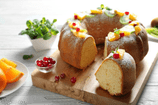

<!--
  Generated template for the SweetPage page.

  See http://ionicframework.com/docs/components/#navigation for more info on
  Ionic pages and navigation.
-->
<ion-header>
    <ion-navbar color="bgheader">
      <button ion-button menuToggle>
          <ion-icon name="md-contact" id="my"></ion-icon>
        </button>
      <ion-title text-center>攻略说</ion-title>
      <ion-buttons end>
        <button ion-button ion-only (click)="search()" id="search">
          <ion-icon name = "search"></ion-icon>
        </button>
      </ion-buttons>
    </ion-navbar>
</ion-header>


<ion-content  text-center>
  <div class="pic" >
    
    <p>爱生活·爱甜点</p>
  </div>
  <div class="pw">
      
      <p class="p1">蛋糕</p>
  </div>
  <div class="sw">
  <div *ngFor="let item of cakes;" sytle="float:left" class="cake">
    
    <div class="wenzi">{{item.name}}</div>
  </div>
  </div>
  <div class="pw">
      
      <p class="p2">布丁</p>
  </div>
  <div class="sw">
  <div *ngFor="let item of budings;" sytle="float:left" class="cake">
    
    <div class="wenzi">{{item.name}}</div>
  </div>
  </div>
  <div  class="pw">
      
      <p class="p3">饼干</p>
  </div>
  <div class="sw">
  <div *ngFor="let item of binggans;" sytle="float:left" class="cake">
    
    <div class="wenzi">{{item.name}}</div>
  </div>
  </div>
  
</ion-content>
